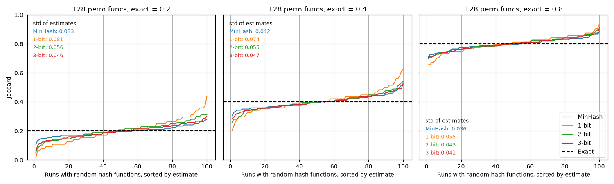

b-bit MinHash
b-bit MinHash,
by Ping Li and Arnd Christian König, reduces the storage of a MinHash by
keeping only the lowest b bits of each minimum hash value. At
b = 1, a 128-permutation sketch shrinks from 512 bytes of hash values
to 16 bytes. The price is accuracy: dropping bits makes unrelated minimum
values collide on their remaining bits, and the estimator corrects for
those collisions at the cost of higher variance. The correction works
best when the similarities you care about are high; use a larger b
when you need to resolve lower similarities.
Create a datasketch.bBitMinHash from an existing
datasketch.MinHash:
from datasketch import MinHash, bBitMinHash
data1 = ['minhash', 'is', 'a', 'probabilistic', 'data', 'structure', 'for',
'estimating', 'the', 'similarity', 'between', 'datasets']
data2 = ['minhash', 'is', 'a', 'probability', 'data', 'structure', 'for',
'estimating', 'the', 'similarity', 'between', 'documents']
m1, m2 = MinHash(), MinHash()
for d in data1:
m1.update(d.encode('utf8'))
for d in data2:
m2.update(d.encode('utf8'))
bm1, bm2 = bBitMinHash(m1, b=1), bBitMinHash(m2, b=1)
print("Estimated Jaccard for data1 and data2 is", bm1.jaccard(bm2))
A b-bit MinHash is frozen: it cannot be updated with new values and
cannot be used with the LSH indexes in this library. It only compares
with another b-bit MinHash of the same b, seed, and permutation
scheme. Convert a MinHash once it needs no further updates, for example
right before pickling it for storage.
The plot below shows the Jaccard estimates of 100 sketches of the same pair of sets, each sketch built with a different set of random hash functions, for three exact similarities. The runs of each estimator are sorted by their estimate, so the vertical span of a line shows the spread of that estimator and its crossing of the dashed line shows the median; the standard deviation of each estimator is printed in each panel. With 128 permutation functions, 2 and 3 bits already track the full MinHash closely, while 1 bit shows visibly higher variance.

You can reproduce this figure with
benchmark/sketches/b_bit_minhash_benchmark.py.